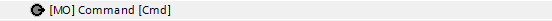
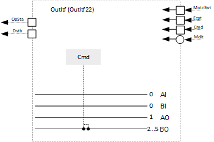
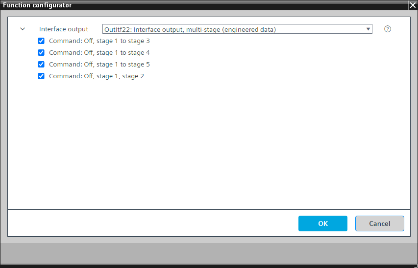

[OutItf22] 接口输出，多级
Program block, name / node subtype: [OutItf22] Interface output, multi-stage
Library hierarchy: Universal equipment
Family: OutItf
项目树 | 图表 |
|---|---|
|
 |  |
Configurator


程序块存储在没有 I/Os. 的库中 使用auto-create and auto-connect函数创建 I/Os 和 /or 将它们连接到接口块，例如 R_A、CMD_B。或者，从包含库中预定义 I/Os 的文件夹中取出 I/Os，并从工厂中取出 /or，并将它们连接到接口块。
这是 OutItf21 的替代方案。
该程序块可以在不同的程序块（电加热盘管、加湿器、直扩冷却盘管、直扩加热/cooling盘管）中使用来控制它们的输出，这些输出由相应聚合的控制单元读取。
仅以下选项之一必须处于活动状态。
该程序块具有以下可选功能：
Option: Command: Off, stage 1, stage 2 (1xMO = 2xBO)
使聚合能够受到控制并通过发送多状态信号来请求其阶段之一。
Option: Command: Off, stage 1 to stage 3 (1xMO = 3xBO)
使聚合能够受到控制并通过发送多状态信号来请求其阶段之一。
Option: Command: Off, stage 1 to stage 4 (1xMO = 4xBO)
使聚合能够受到控制并通过发送多状态信号来请求其阶段之一。
Option: Command: Off, stage 1 to stage 5 (1xMO = 5xBO)
使聚合能够受到控制并通过发送多状态信号来请求其阶段之一。
姓名 | 描述 | 类型 | 报警/通知类 | 趋势/类型 |
|---|---|---|---|---|
Cmd | Command | MO：多态输出 | No | 是的，4 |
必须选择四个选项之一。
如果需要，必须检查和调整多状态映射。
描述 |
|---|
Command: Off, stage 1, stage 2 |
Command: Off, stage 1 to stage 3 |
Command: Off, stage 1 to stage 4 |
Command: Off, stage 1 to stage 5 |